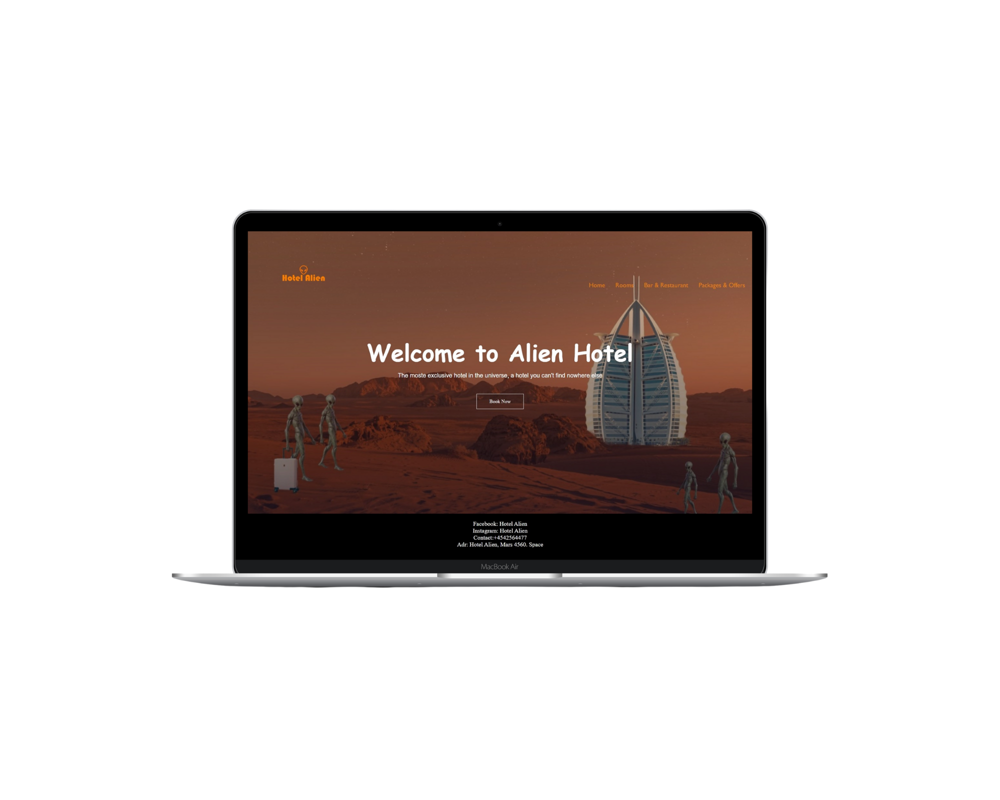
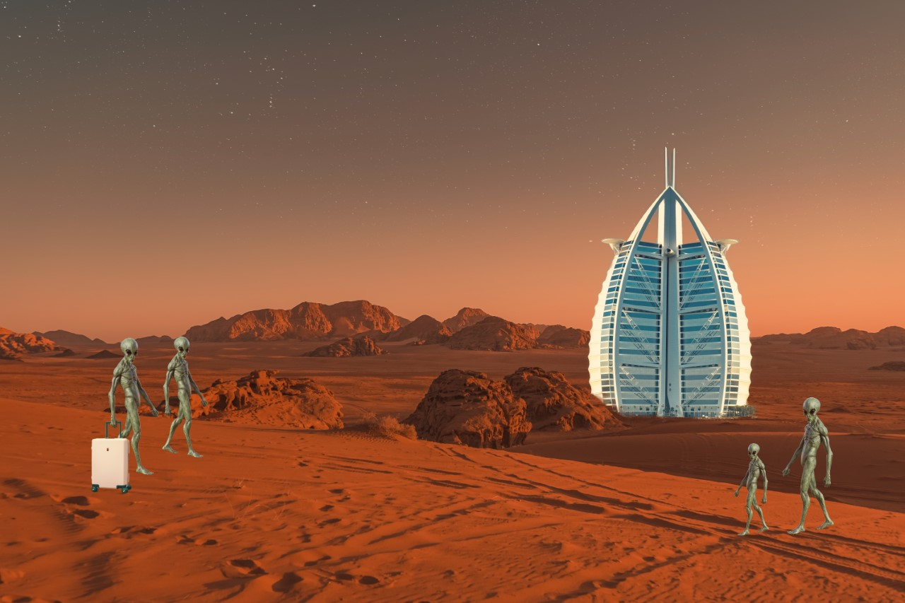
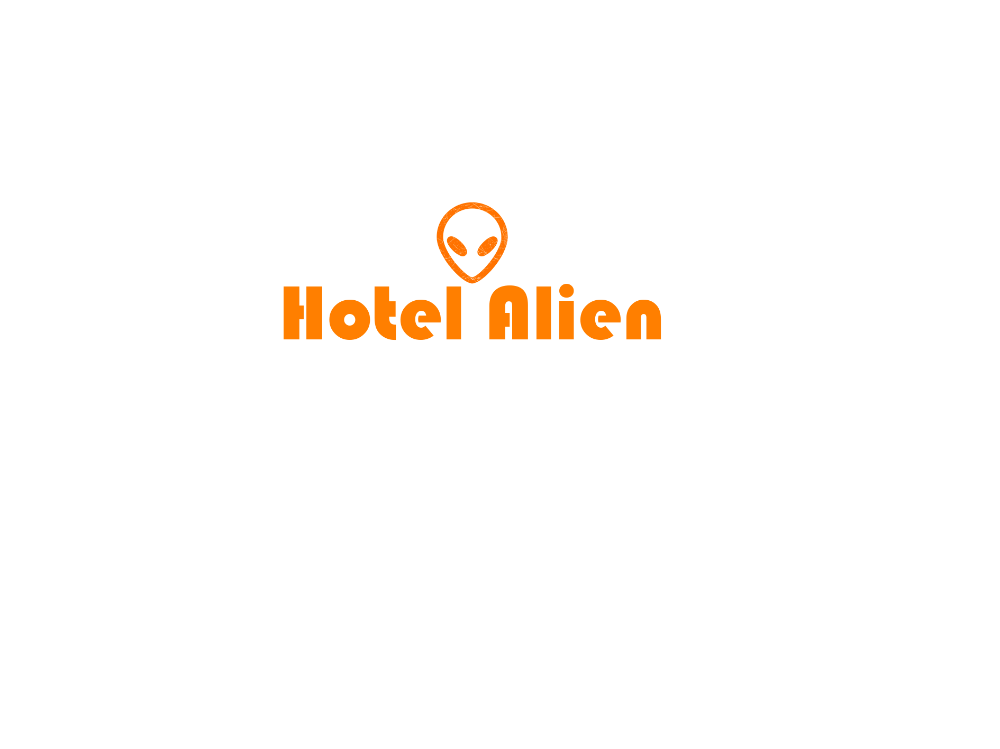

Hotel Alien
ÅRGANG
2020
SERVICE
Hjemmeside
KUNDE
Hotel Alien
Hotel Alien blev grundlagt i 2015, og er siden da blevet kåreret som det landets bedste hotel 2 år i træk. De ønskede sig en hjemmesid,
som blev skræddersyet til deres koncept.
Processen
Projekt beskrivelse
Mit første projekt i mit studie gik ud på at lave en hjemmeside til et fiktivt rumrejseprogram. Dette skulle vi lave via HTML og CSS. Vi kom frem til, at lave et projekt, hvor vi skulle lave en hjemmeside til vores koncept, som vi kaldte “Hotel Alien. Gennem photoshop lavede vi et billede, med blikfang, som skulle tiltrække deres målgruppe.

Udvikling
Eftersom vi havde med et hotel på mars at gøre, var det vigtigt at finde den rette målgruppe. Da en rumrejse til planeten mars ikke vil være billig, rækker vores koncept primært til det blå segment i Minerva modellen. Dette skyldes at det blå segment i Minerva modellen typisk består af veluddannede personer, med en høj indkomst. I forlængelse af vores koncept, startede vi med at sketche forskellige layouts til vores hjemmeside. Vi ønskede at lave et visuelt billede af, hvordan hjemmesiden skulle se ud, inden vi begyndte at kode. Efter at have sketchet, blev det klart for os, at de tre faner/sider skulle bestå af en forsiden, en side med værelsesinformation og en side med pakketilbud.
Fotoshop
Eftersom kunden lagde særlig vægt på billedet til hjemmesiden, valgte vi at photoshoppe et billede, som fylde hele forsiden, så der kun var fokus på det. Vi photoshoppede billedet ved at få masket et hotel på nogle aliens ind på et billede af mars, da vi ønskede at vise kunderne, hvilket hotel de kunne komme på.

Logo
Vi valgte desuden at lave et logo til vores hotelside, for at gøre hjemmesiden mere personlig. Vi photoshoppede derfor et logo med en alien og tekst med hotellets navn “Hotel Alien”.

Rolle
Selvom vi alle arbejdede sammen under hele processen, havde vi alle opgaven om at sketche og kode hver vores side. Min rolle var at kode undersiden med information om de værelse man kunne booke på hjemmesiden.
Besøg side her